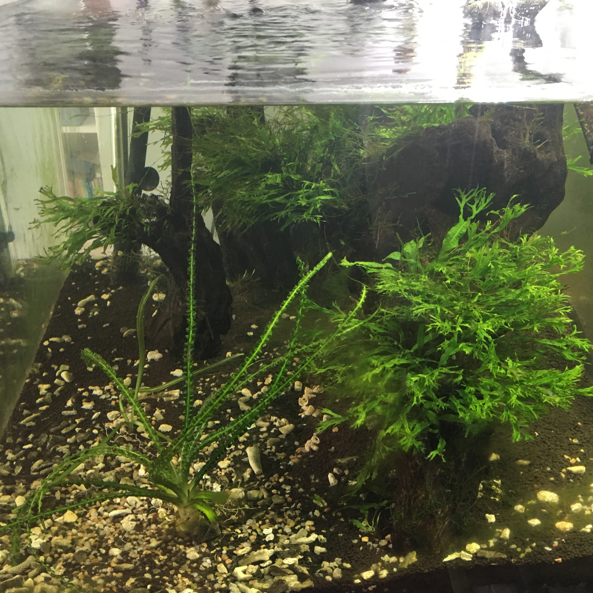
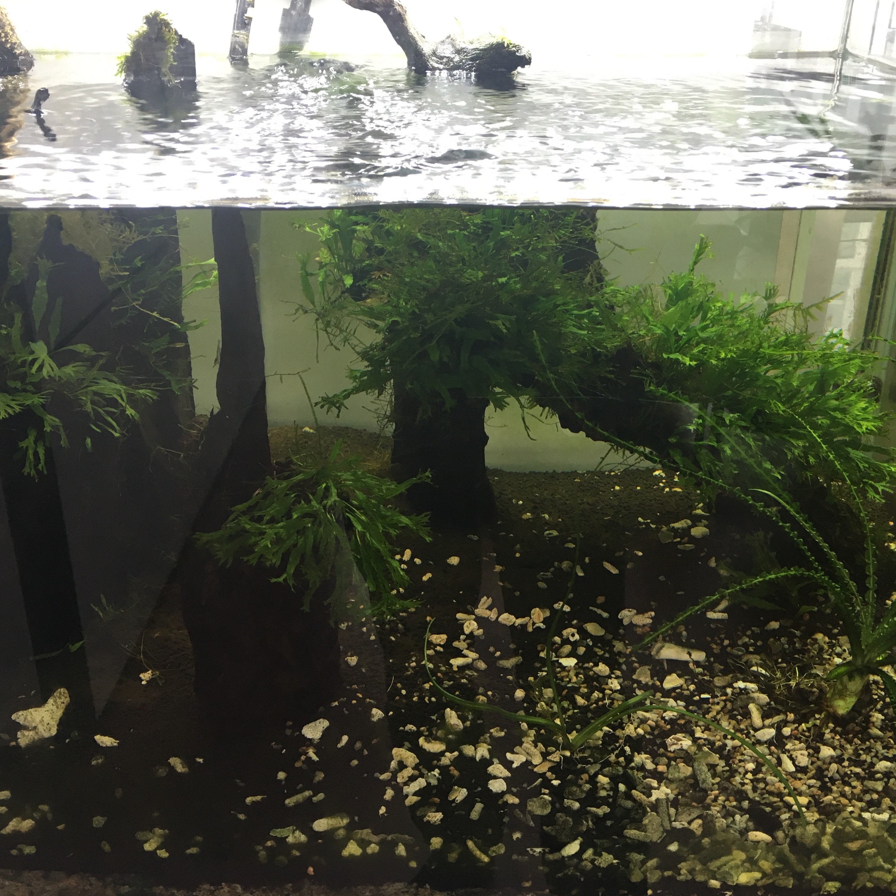
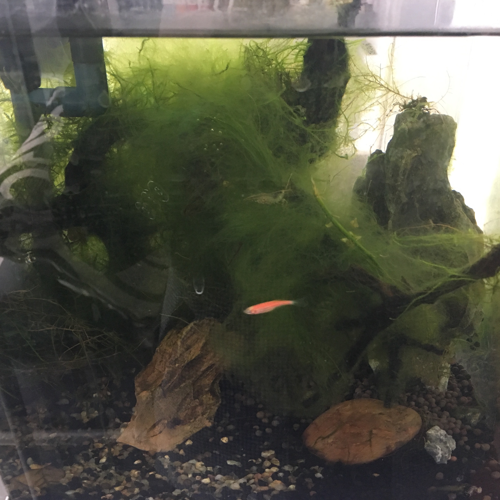
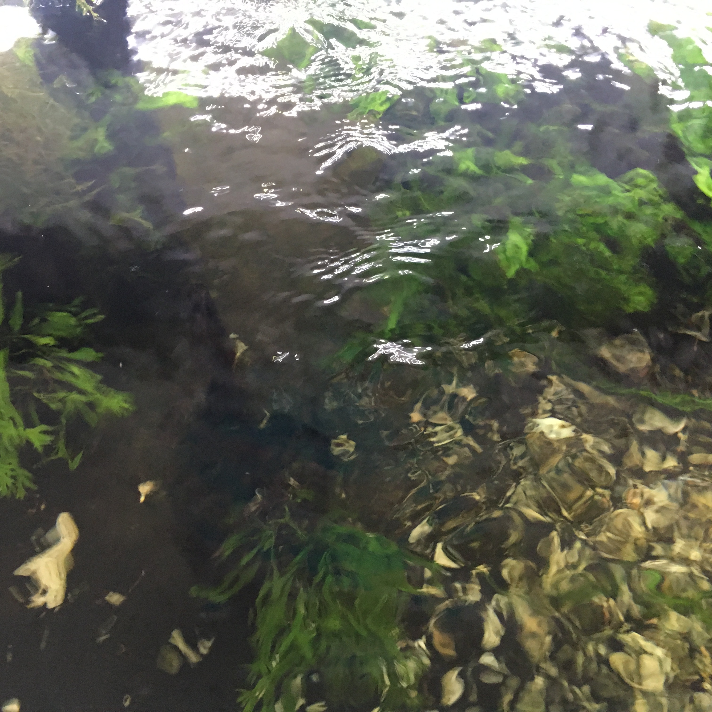
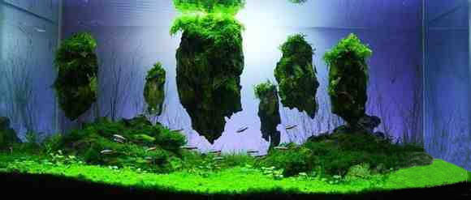
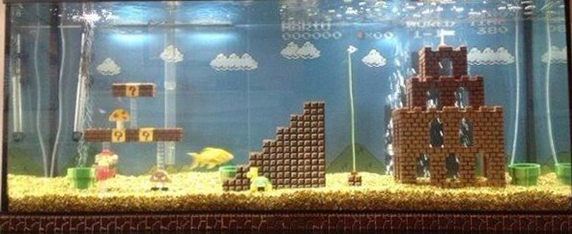

Aquacade
Fairyland, water world
Aquarium landscape is developed on the basis of the tropical fish breeding and planting grasses.Fish container plus adornment, can get the result of the icing on the cake.Fine sand wash can be spread in the bottom of the tank, put some pebbles, rocks, also can decorate some arts and crafts, such as Bridges, pagodas, pavilions, cylinder in a kind of aquatic plants, such as hornwort, bitter grass, black algae, buttercup, clove smartweed, among them with buttercups, black is preferred.All accessories must be smooth, fruity, soft, decorations arrangement should aim high and low density have send, beautiful and easy, goldfish in color, size, shape, etc should be in harmony with the environment.
鱼缸造景是热带鱼饲养与种植水草的基础上发展起来的。鱼容器再加装饰，就能收到锦上添花的效果。可将细粒砂子洗净铺于水族箱底部，放置些卵石、假山石，还可装饰些工艺品，如小桥、宝塔、亭台楼阁，缸中种些水草，如金鱼藻、苦草、黑藻、毛茛、丁香蓼，其中以毛茛、黑藻为佳。所有饰物必须光滑、圆润、柔软，饰物的安排应力求高低疏密有致，美观大方，金鱼在色彩、大小、体态等方面要与环境相协调。






